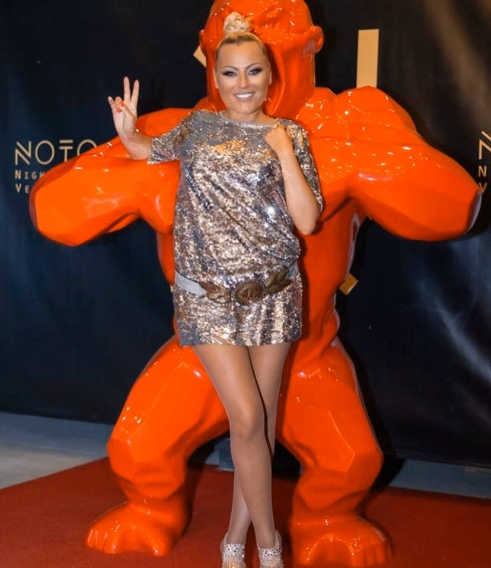

Аз самата успях да отслабна и искам да помогна и на вас да отслабнете
Здравейте! Съжалявам, но просто нямах време да отговоря на всички ваши въпроси. Ако се замислите, темата е една и съща - как да отслабнете веднъж завинаги. И, разбира се, без вреда за здравето ви! Затова реших да напиша този пост и да ви разкажа по-подробно, как успях да отслабна с 15 килограма.
ТЕЗИ СНИМКИ СА НАПРАНИ ПРЕДИ 2,5 МЕСЕЦА - ВПЕЧАТЛЯВАЩО, нали?
Никога не съм била слаба, но в един момент нещо
се случи с тялото ми – гушата ми висеше на гърдите ми като гушата на пуйка, имах мазнини и
целулит навсякъде - по корема, краката и дори ръцете.
Изхвърлих всичките си потници, след като
забелязах колко ужасно изглеждат ръцете ми.
Уморих се да плача пред огледалото, трябваше да
се стегна.
По-точно, да си стегна дупето!
Опитах абсолютно всичко, вероятно като всяко
друго наивно момиче като мен.
Подложих се на диета и започнах да спортувам
усилено.
Една сутрит се събудих рано сутринта, изядох
едно сурово яйце (никога не го опитвайте!) и излязох навън, като едва движех краката си.
Премахнах пържената храна от рациона си, записах
се на фитнес, купих си чай за отслабване и напълних хладилника с кисело мляко.
Пълен комплект, така да се каже.
Как мислите, отслабнах ли?
Не, точно обратното! Напълнях още повече, за няколко седмици интензивни упражнения качих още 5 кг. Станах 89 кг! С ръст малко над 1,60 см! По-късно лекарите ми обясниха, че организмът е подложен на стрес и затова започва интензивно да натрупва 'масни запаси'. Организмът ми си мислеше, че искам да го унищожа. Забравих вкуса на хляба, забравих какво е месо, забравих какво е чувството да се топи сладолед в устата ми. Ядях само ябълки и пиех само вода, но, уви, напразно.
Накратко казано, месеци наред опитвах какви ли не методи за отслабване, докато един ден просто изгубих самообладание.
Срам ме е да го призная, но един ден просто реших, че ми е писано да умра като дебела старица, заобиколена от 7 котки. Отидох в 'Макдоналдс', изкупих половината меню и едва половин час по-късно спрях да тъпча храна в устата си. След това плаках с часове, мислейки, че по-лошо от това вече няма накъде.
И тогава се случи чудо. Не в тоалетната на 'Макдоналдс', разбира се, а две седмици по-късно. Попаднах на един блог на една жените на България в youtube, която ми разказа как мечтаела да се отърве от проклятието в семейството си, където всички били дебели. "" ѝ помогнал да сбъдне мечтата си. И аз също си поръчах "". След това прочетох много информация за този продукт в интернет. Оказа се, че много холивудски звезди са отслабнали именно с този продукт. Не вярвах в чудодейната трансформация, тъй като бях опитала почти всички съществуващи диети и програми и нито една от тях не ми помогна, затова се съмнявах и че. "" ще ми помогне. Е, не трябваше да се съмнявам!
Доставката пристигна бързо, за по-малко от седмица. През това време прочетох много отзиви и информация за "" и се убедих, че това е най-добрият избор. Следвах инструкциите, приемах "" два пъти дневно, сутрин и вечер.
А сега слушайте внимателно. По-добре седнете.
Свалих 7 кг за 2 седмици! Това означава, че съм сваляла по около килограм на ден, можете ли да повярвате?!
Милиони жени в Европа и САЩ са свалили излишните килограми с помощта на "". Статистиката показва, че 96,7% от тях са постигнали впечатляващи резултати и са успели да отслабнат с 8-11,5 кг само за 23 дни!
Уникалната комбинация от съставки прави процеса на отслабване лесен и реален - резултатите са впечатляващи!
Почти 10 см от обиколката на талията
просто
изчезнаха
Не можех да повярвам на очите си.
Кожата, косата - всичко блестеше и изглеждаше
перфектно, пъпките по гърба и гърдите ми изчезнаха.
Започнах да вярвам, че наистина мога да се
превърна от дебеланата, която бях на този етап, в истинска принцеса - кантарът и огледалото не
лъжат!
И повярвайте ми, по онова време не спазвах
никакви диети, целият ми успех в отслабването беше постигнат единствено с помощта на
"".
И третата седмица постигнах успех - свалих 3,5 кг.
И най-невероятното нещо беше, че не трябваше да
правя нищо - просто пиех
""
Следвах инструкциите и се опитвах да запомня да
приемам препоръчаната доза.
Дори най-мързеливият човек може да го направи.
Свалих 10 кг за 3 седмици. Без усилие, без ограничения в храненето или усилени упражнения. Дебелото ми коремче, целулитните ми ръце и гушата изчезнаха завинаги. Може да се каже, че плача от щастие, докато пиша
След пълноценна диета с "" тоест за 2,5 месеца, аз свали 15 кг. Не знаем на колко чудеса е способно човешкото тяло с малко помощ от наша страна. Вече не съм на 20 години, когато килограмитеХИЛЯДИ ХОРА ВСЕ ОЩЕ НЕ МОГАТ ДА ПОВЯРВАТ НА ТОВА, КОЕТО ВИЖДАТ В МОМЕНТА:
Между другото, "" е тестван от Националната академия на науките през -. Резултатите щяха да изменят драстично ситуацията на пазара, затова те не ги направиха публично достояние.
Ще попитате защо? Защото този продукт довежда до фалит фармацевтичните компании, лекарите, диетолозите и частните клиники! И особено, имайки предвид, че говорим за продукт на такава достъпна цена.
Сега разказвам на всичките си приятели и колеги за "" защото смятам, че всеки трябва да знае за него. Да си тънък и енергичен е нещо толкова хубаво и искам всички около мен да разберат колко много щастие може да донесе този продукт. Поръчвайте продукта само от официалния му уебсайт. Спрете да гладувате и не хабете излишни сили във фитнеса.
Все още ли мечтаете за стройно тяло? Време е да действате! Незабавно се отървете от излишните килограми!
Отговори на най-популярните въпроси:
Появяват ли се стрии след бързо отслабване?
Не,
""
не оставя стрии!
Отслабването, макар и доста значително, е
постепенен процес, така че кожата има достатъчно време да се адаптира към промяната и да запази
тонуса си.
Какво се случва с кожата!
Променя ли структурата си?
Не!
Просто се връща към нормалното си състояние.
""
задейства производството на колаген, който
позволява на кожата да бъде еластична и стегната.
Няма стрии или целулит, повярвайте ми!
Какъв хранителен режим да спазвам?
Аз съм против всички диети, защото не е нужно
да измъчваме телата си.
Вярно ли е, че не можеш да ядеш след 18:00 ч?
Това е мит!
Трябва да ядете, тогава, когато се чувствате
гладни!
Разбира се, по-добре е да се храните на малки
порции.
Имам страхотни новини. Свързах се с представителите на "" в България и те предложиха 50% отстъпка на първите 100 посетители на моя блог, които направят поръчка. Можете да получите "" само за .
 Стана Петрова
Стана Петрова
Още от дете мечтая за стройно тяло. Научих за "" преди три месеца. Колебаех се дали да го поръчам, но майка ми ме убеди. Това не е висока цена за сбъдването на моята мечта! Сега и двете отслабваме заедно. Тя дори успя да свали повече килограми от мен, но и моите резултати са невероятни.

 Радиана Тодорова
Радиана Тодорова
Здравей, Камелия! Опитах "" и сега мога да ви кажа, че сте спасили семейството и брака ми) Съпругът ми отново започна да ме възприема като привлекателна жена, възвърна ми увереността в себе си. Вече се чувствам по-добре, благодаря ви!))
 Маринела Цанева
Маринела Цанева
Скъпа, Камелия, имаш прекрасен блог и всичко, което препоръчваш, наистина има ефект. Опитах десетки диети и програми за отслабване, но резултатите винаги бяха под очакванията ми. В момента съм 85 кг, а ръстът ми е 1,63. Поръчах "" веднага след като прочетох Вашия пост. Надявам се да ми помогне да сваля 15 кг. Обещавам да разкажа подробно за резултатите си.
Здравей, Мирела! Не съм единствената, отслабнала с помощта на "" , отслабнаха и други мои приятели, така че бъдете сигурни, че и при вас ще се получат нещата. За мен е важна обратната връзка, споделяйте своите резултати, за да чуем вашето мнение. Искрено се надявам да успетее, късмет!
 Ана Миланова
Ана Миланова
Вчера получих пратката си. Много съм развълнувана, нямам търпение да видя първите резултати.
 Росица Божкова
Росица Божкова
Скъпа, Камелия! Благодаря Ви! Свалих излишните килограми толкова бързо и без усилие. Това е истинско чудо, благодаря Ви, че ни разказахте за този невероятен продукт!
Винаги съм знаела, че съвременните технологии няма да се провалят и че ще се намери решение на проблема със затлъстяването.') 'Утре ще ходя на среща в изискан ресторант за първи път от години. Съвсем наскоро бях в този ресторант – все още усещам миризмата на пържено месо)) С "" свалих 23 кг за 2,5 месеца! Благодаря ти, Камелия!
 Антония Веселинова
Антония Веселинова
Уау! Камелия, постигнала си такъв впечатляващ резултат само за 2,5 месеца?? Мисля, че определено трябва си поръчам една опаковка от този продукт! Вчера се качих на кантара - положението не е толкова розово ((
И аз опитах "" и след 6 месеца отслабнах с 34,5 кг !!! Никога нямаше да повярвам, ако не ми се беше случило! Това е просто невероятно! Камелия, много ти благодаря!

 Донка Кацарова
Донка Кацарова
Най-накрая поръчах "". Благодаря ти, Камелия! Както обещах, споделям резултатите! Свалих 32 кг за 2,5 месеца! Какъв успех!
 Димитър Ников
Димитър Ников
Уау, наистина впечатляващи резултати. Моят приятел отслабна с 19 кг. благодарение на "" след само 1,5 месеца. Дори майка му не можа да го познае!
 Милена Костова
Милена Костова
Благодаря ви за подкрепата. Наистина ново тяло, нов живот. Свалих само 5 кг, но успявам да отслабна, така че съм доволна.
 София Пенева
София Пенева
Трима мои приятели отслабнаха благодарение на "" а другите вече не могат да ги познаят, защото преди винаги са си били пълнички, а сега приличат на манекени от модния подиум. Аз също поръчах този продукт, защото не искам да съм най-непривлекателната в компанията ни.
 Елена Симеонова
Елена Симеонова
Камелия, както поискахте, пиша Ви относно резултатите си. за първия месец отслабнах с 12 кг !!! Нямате представа колко съм щастлива!
Здравей, Елена, много се радвам за теб, но доколкото си спомням, искаше да свалиш 30 кг, така че имаш още много да сваляш! Успех и не забравяйте, че ви подкрепям и винаги съм насреща!
Здравей, Камелия! прочетох историята Ви и реших да поръчам "". Имах среща със съучениците си, които не бях виждала много отдавна, и щеше да е неудобно да се появя пред тях в този вид. Висока съм 1,60 и тежах 91 кг. Дори не можех да намеря подходящите за мен дрехи... но успях да отслабна и да се побера в размер 44 благодарение на ""! Така че на тази среща аз бях кралицата на бала)) Свалих над 30 кг за 3 месеца, което е невероятно, просто нямам думи да изразя чувствата си. Благодаря ви!
Кристина Митева
Скъпа Камелия, много благодаря за препоръката ви! Много съм чела за "" но се страхувах и не мислех, че ще има резултат. Поръчах го едва след като прочетох вашата публикация. Изминаха три седмици, откакто приключих приема на "". Отслабнах с 39 кг! Сега тежа 46 кг и, както и при вас, теглото ми вече не се променя. Вече не се притеснявам за фигурата и бъдещето си. БЛАГОДАРЯ!